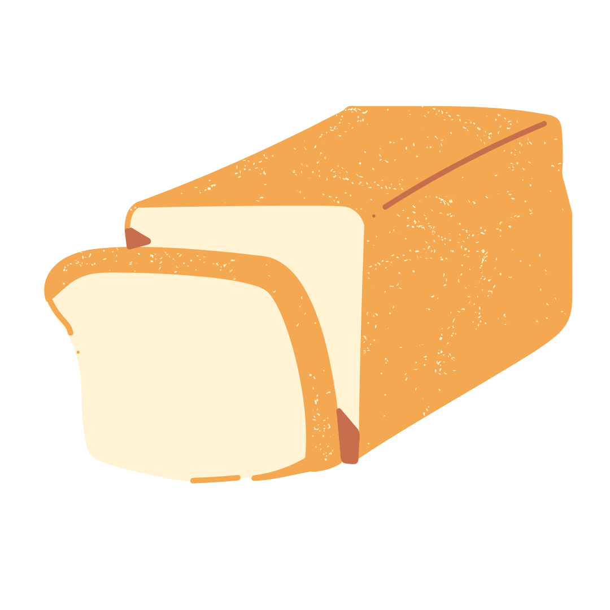
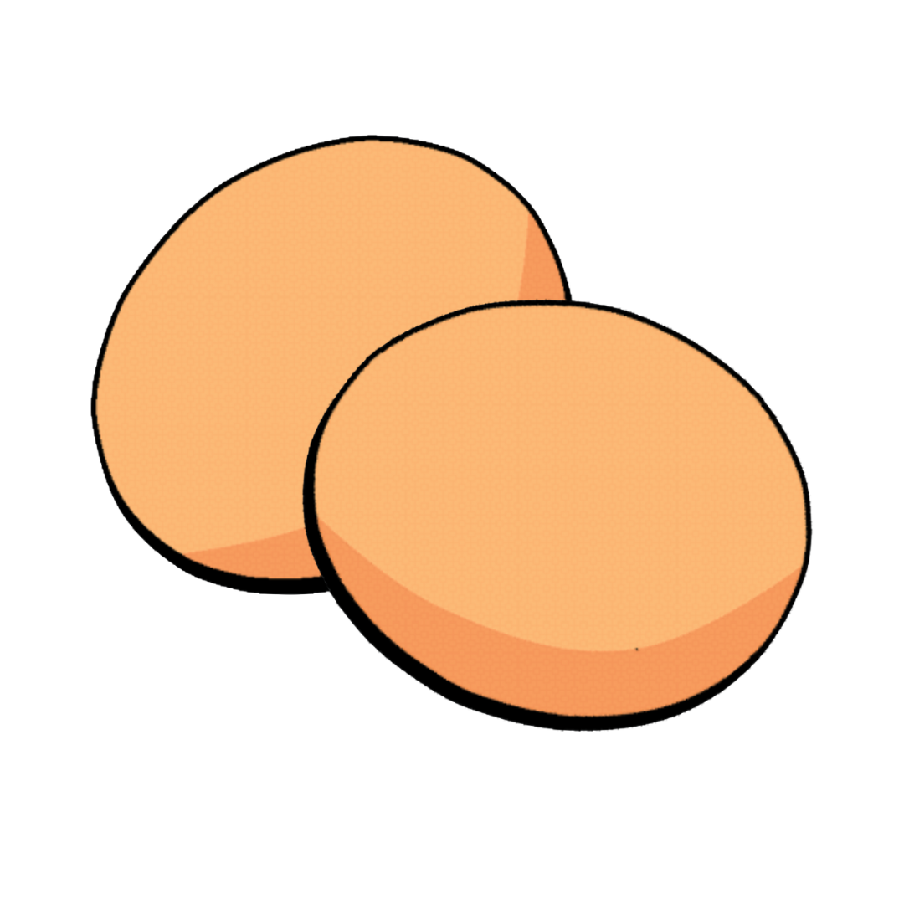
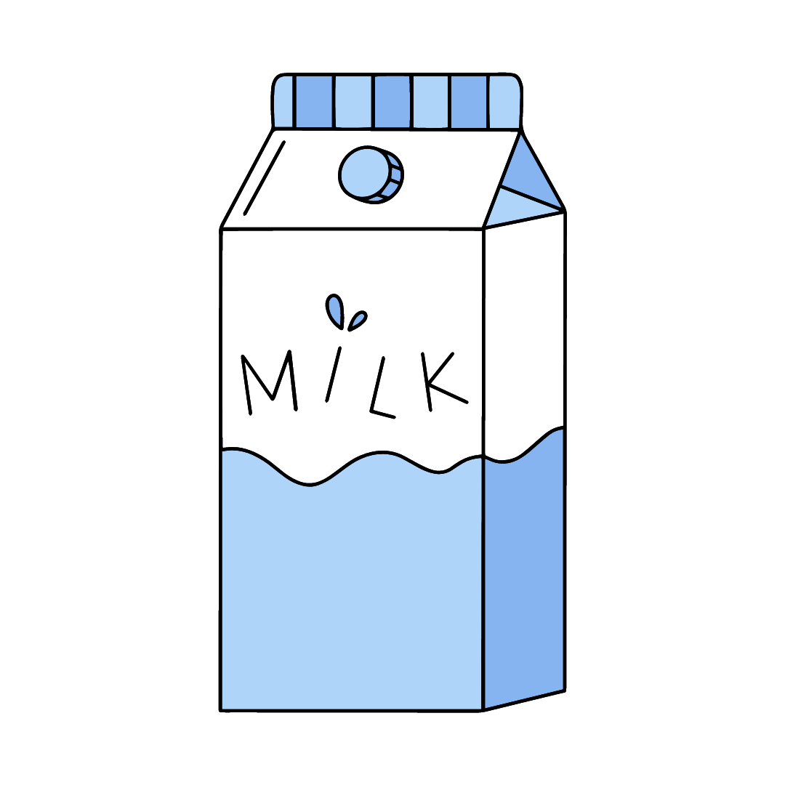
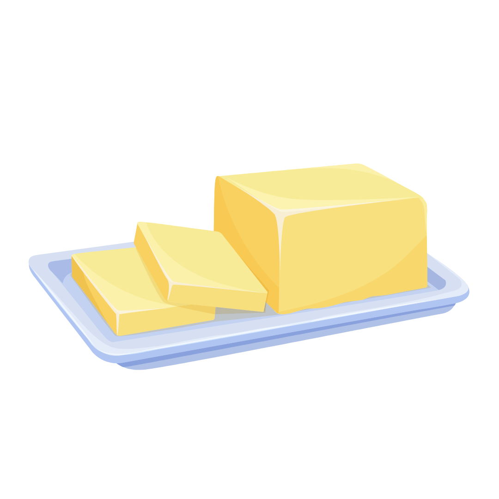

- French Toast is an easy breakfast recipe which I love
- Whisk milk, eggs, salt, pepper and chilli powder together in a bowl.
- Lightly butter a pan and heat over medium-high heat.
- Dunk bread in the egg mixture, soaking both sides.
- Transfer to the hot pan and cook until golden, 3 to 4 minutes per side
- Add honey on top of it and serve.
Bread
Eggs
Milk
Honey
Salt and Pepper

Chilli

Butter
